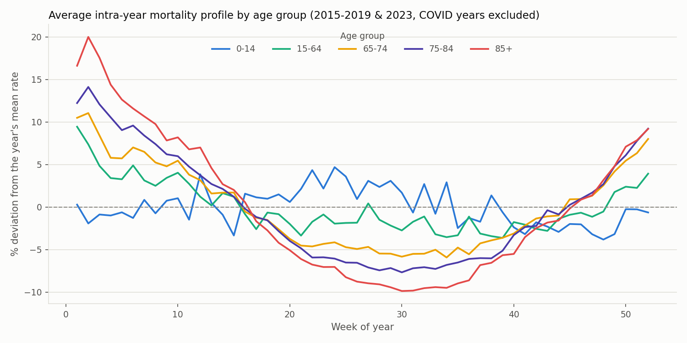
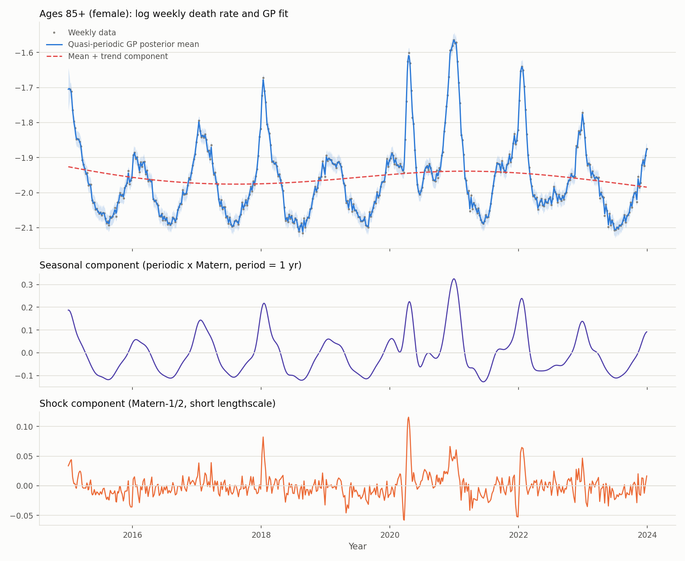
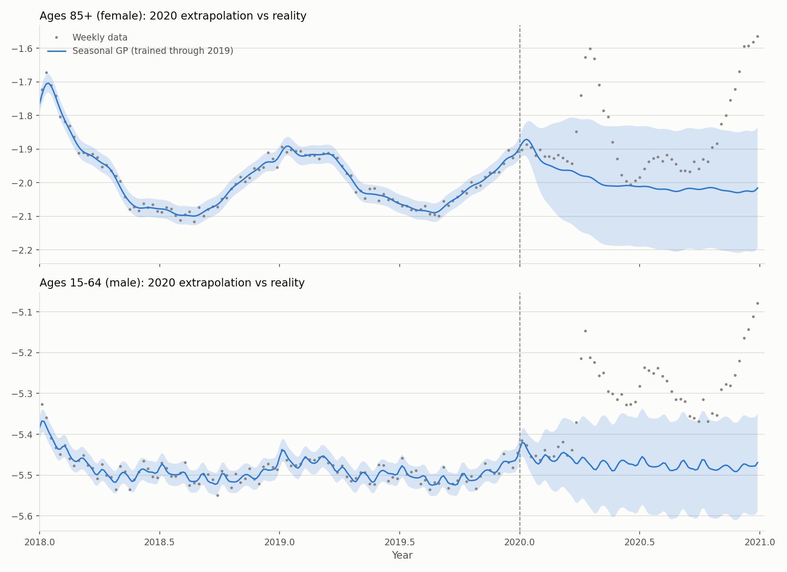
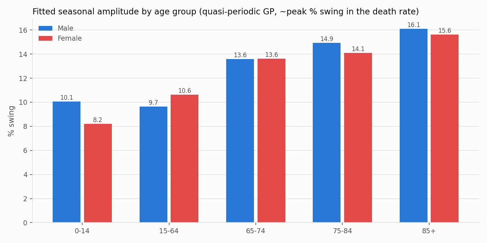
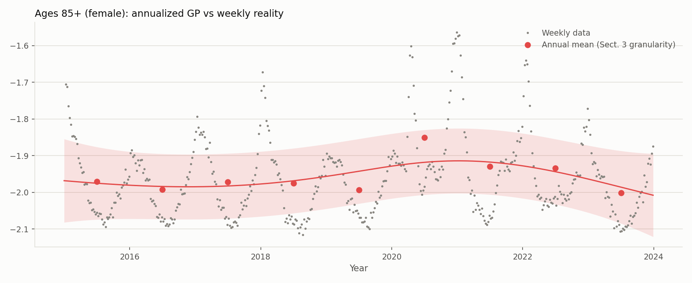

GP Modeling of Short-Term Mortality Fluctuations
Overview
This project is a full solution to Research Project 6: Advanced GP Modeling of Short-Term Mortality Data from Springer’s An Invitation to Undergraduate Research in Risk Management, pointing the GPyTorch toolkit at open mortality data. All code, data, and figures live in the GitHub repo.
The data are weekly all-cause death rates for the USA from the Short-Term Mortality Fluctuations (STMF) database, five age groups × male/female, 2015–2023 (final-vintage data only). The official file arrives in wide format — death counts and rates for each age band spread across columns — and is reshaped to long format with age treated categorically (one GP per sex × age series): STMF’s five coarse, unevenly spaced bands differ by whole units of log-rate, so forcing a shared stationary kernel across a numeric age input would impose smoothness on a dimension observed at five points.
Weekly mortality has two features annual data can’t show: a strong winter seasonal cycle, and the COVID-19 shock —

Research questions
- How large is intra-year mortality seasonality, and how does it scale with age?
- What does the COVID shock do to a stationary GP — and what kernel structure repairs it?
- Do the sexes differ in seasonal amplitude or trend?
- What does weekly modeling add over the book’s Sect. 3-style annualized GP models?
Models
Exact GPs (GPyTorch) on \(y = \log\) (annualized weekly death rate), input \(x = t\) in decimal years, linear prior mean. The model zoo, per series:
| Model | Kernel |
|---|---|
annual |
Matérn-5/2 on annual aggregates (the Sect. 3 baseline) |
trend |
Matérn-5/2 |
seasonal |
Matérn-5/2 + Periodic (period fixed at 1 yr) |
quasi |
Matérn-5/2 (lengthscale ≥ 1 yr) + Periodic × Matérn + Matérn-1/2 (lengthscale ≤ 0.25 yr) |
The quasi model’s constraints are the interesting part. Fit to 2015–2023 data, an unconstrained trend kernel shrinks its lengthscale to ≈ 0.1 yr — the “smooth trend” degenerates into a wiggly interpolator chasing COVID waves. Constraining the trend to stay slow and adding an explicit short-lengthscale shock channel restores an interpretable decomposition:

Results
COVID breaks a stationary GP exactly as it should. Trained through 2019 and extrapolated into 2020, the seasonal GP’s 95% intervals cover only 19–26% of 2020 weeks for ages 65–84 (nominal 95%), with average rate errors above 20%:

Seasonality scales with age; the sexes barely differ in it. Fitted seasonal amplitude grows monotonically from ≈10% (ages 15–64) to ≈16% (85+) peak swing, nearly identical across sexes — while levels differ by a large male excess everywhere, and both sexes share improving post-COVID trends at 65+ of roughly 1.5–2.5%/yr:

Weekly and annual GPs agree on the long run — and only there. The annualized baseline fits trend lengthscales of ≈4–6 yr, matching the weekly quasi-GP’s — but everything sub-annual (flu winters, COVID wave timing, seasonality itself) is invisible to it, absorbed into its noise term:

Likelihood alone rewards the wrong model. BIC prefers the unconstrained seasonal model (its trend kernel is free to chase COVID, buying in-sample likelihood), but on a 2023 hold-out the constrained quasi model wins decisively: mean RMSE 0.083 vs 0.141 log units, 95%-interval coverage 0.89 vs 0.76, NLPD −0.75 vs −0.06. The interpretability constraints turn out to be the better forecasting prior — a clean miniature of the project brief’s “refine and iterate” cycle.
Residual diagnostics (against week-of-year, calendar year, and age group) are flat for adult series at ≈±0.003 log units; the 0–14 series is dominated by small-count observation noise (fitted noise SD ≈0.05 vs ≈0.006 for adults), and the GP correctly declines to find seasonal signal in it.
Stack
Python · GPyTorch · PyTorch · Pandas · Matplotlib